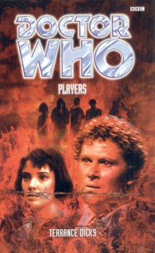

|
Players
|
BASIC PLOT DOCTOR There is also a lengthy cameo for the Second Doctor set after The War Games, which finally canonizes the theoretical Season 6b. COMPANIONS MATERIALISATION CIRCUIT Pg 118 In a quiet corner of Green Park, London, 1936 (then it vanishes again into parking orbit). Pg 249 In the garden of the Doctor's rented house, before immediately disappearing again. PREPARATORY READING CONTINUITY REFERENCES Pg 3 "With a sucking squelching sound the TARDIS disappeared." It makes a change from the more usual 'wheezing groaning sound' (See Pg 249). "Perpugilliam Brown, Peri for short, late of Pasadena, California." Peri's hometown of Pasadena has been mentioned in other books, although Bad Therapy hilariously claimed her accent was "pure New York". It's been posited that she moved around a lot as a child. Pg 4 "Since we first met leaving Androzani Minor..." The Doctor's regeneration in The Caves of Androzani. "Since we left those lousy caves, we've visited a planet ruled by paranoid gastropods, a London invaded by Cybermen, and a Punishment Dome dedicated to torture and death - heaven knows what else..." The Twin Dilemma, Attack of the Cybermen and Vengeance on Varos. 'Heaven knows what else' includes at least The Mark of the Rani (the back cover states that this book happens afterwards) and also usefully can include any number of MAs and PDAs as can be fitted in. Pg 5 "For a moment he considered offering Peri a trip to Metebelis Three. Then he thought perhaps not. Somehow those Metebelis Three trips never worked out." The Green Death, Planet of the Spiders and, later on, the Seventh Doctor section of The Eight Doctors. It appears that Dicks is contractually obliged to mention Metebelis Three at least once per book. Pg 13 "There was a screeching, clangorous clash and the armoured train rattle bone-jarringly to a violent halt." The train crash, Churchill's involvement in it and the subsequent events including his imprisonment and escape are all factual, with the obvious exception that Doctor John Smith and his ward, Miss Brown, were probably not there in the real world. Pg 16 "'The funny thing is, he looks familiar,' the Doctor went on. 'I've met him before somewhere - before or after.'" The Doctor has, on occasion, claimed to have met Winston Churchill. This sounds like it's going to be a continuity reference, but actually refers to the Second Doctor section in the middle of this very book. Pg 24 "The Doctor, Peri and the man they had come to warn ran down the track to the engine." By this point, Dicks is turning cartwheels trying to avoid saying 'Churchill' and the descriptions get sillier and sillier. Pg 25 "'Smith,' said the Doctor. 'Doctor John Smith. This is my ward, Miss Perpugilliam Brown.'" The Doctor's old nom-de-plume, which was first used in The Wheel in Space, returns. Pg 33 "I never carry weapons. I don't approve of them." As we have often known to be the case. Pg 35 "'Love and War, you know, my dear young lady,' said Churchill." It seems unlikely that he's recommending the New Adventure by Paul Cornell, but you never know. Pg 39 "It's just that I need certain information first. And Peri's rather better equipped than I am to obtain it." The Doctor, somewhat cheekily, appears to be referring to Peri's breasts, since three sentences later poor old Field-Cornet Oosthuizen is "hypnotized by the rise and fall of [her] white cotton blouse." At least Peri knows how to flirt; compare Ace's hilarious attempt in The Curse of Fenric. Pg 40 "'Forgive me, but why does it have "Police Box" written on top?' 'Er - camouflage,' said Peri. 'Camouflage?' Maybe the word hasn't been invented yet, thought Peri. 'It's an American expression,' she said hastily. 'It means "disguise".'" Military use of camouflage began in India in the mid-nineteenth century, but did not come into general usage for entire units until this very Boer War, which is presumably the point that Dicks is getting at. The use of the term 'camouflage', however, did not enter the English language until 1917. Presumably, Oosthuizen forgot that he'd heard it (or happened to be near Ypres in 1917). Pg 54 "'Key, key, key!' said the Doctor, searching through innumerable pockets. 'Where did I hide the key? Of course!' He took off his left boot and shook it out." The Doctor had hidden the TARDIS key in one of his shoes at the beginning of Spearhead from Space. Pg 58 "The explosion in the armoury was recorded as a freak accident. A case of gelignite had 'sweated', become unstable and exploded in the heat." Someone's been watching Pyramids of Mars. Pg 59 "Meanwhile, Winston Churchill's escape was proceeding with almost unnatural smoothness. He had the feeling that he was aided every step of the way by invisible hands." Dicks launches into a little history lesson here regarding Churchill's miraculous escape, which, despite the fact that Terrance blames its success on the Players, is, in fact, entirely true. Pg 62 "The Doctor smiled archly. 'You're sure I wouldn't be too much of a boer?' Peri groaned." The Sixth Doctor's use of bad puns was well-publicized, but this is one of his worst. Reference to Custer and the Battle of Little Bighorn, which the Doctor claims to have attended, albeit, thus far, in an unrecorded adventure. Pg 63 "'I can do better than just tell you!' exclaimed the Doctor. 'I can show you - at least, provided this thought scanner's still working.' Even as he spoke he was putting on an oddly-shaped metal headset that he connected to the console." This is how the Doctor showed Zoe the potential perils of TARDIS travel at the end of The Wheel in Space, leading into the subsequent repeat of The Evil of the Daleks. Its use here is actually rather nice, reminding you of the Troughton era quite subtly. "As he closed his eyes, the scanner screen whirred open and revealed a dark-haired little man illuminated brightly against thick blackness, arguing furiously with someone unseen." This is The War Games, episode 10, with the sound turned down. The Doctor goes on to confirm the thought scanner continuity reference to The Wheel in Space: "I last used the thought scanner to show one of my companions an adventure I'd barely survived with the Daleks." Pg 64 "The Doctor closed his eyes again, and the little man on the screen span away into blackness. 'You've lost the picture!' said Peri." Not so. As anyone who's ever seen it would know, that's the last shot of Episode 10 of The War Games. "I was captured by my own people and put on trial for interfering in the affairs of the universe." The War Games "Then sentence was passed and I was exiled to Earth." Spearhead from Space through to The Three Doctors. "Before they did that, a group of some of the... shall we say, less scrupulous Time Lords decided they had one or two other odd jobs for me to perform first." This is Season 6b, as originally suggested by Cornell-Day-Topping in The Discontinuity Guide. The theory that the Second Doctor had another series of adventures before his exile began is confirmed here. This story leads into World Game, which itself leads into the Second Doctor's involvement in The Two Doctors. The implication here is that the CIA are involved in the Doctor's activities at this point, and that the High Council probably know nothing about it. It seems likely that, when the High Council finally worked it out, that was when the sentence was finally passed and the Doctor's life continued thereafter from Spearhead from Space. "The scanner showed the little man stepping out of the darkness into another ray of light. Three tall, shadowy figures - Time Lords, Peri assumed - were gathered around him." These may or may not be the same Time Lords who sent the Doctor on his mission at the beginning of Genesis of the Daleks, although the presence of the Time Ring in a couple of pages suggests that it might be. "'The reason I was captured,' the Doctor went on, 'was because I helped stop a series of war games.'" A quick plot summary of The War Games follows. Pg 65 "That, Doctor, is a Time Ring." We saw a similar device in Genesis of the Daleks. "The Doctor considered his options. Ancient Rome, the Mexican Revolution, the American Civil War..." Various zones from The War Games. Pg 67 "The Doctor found himself standing at the edge of a road. It wasn't much of a road, mind you. It was muddy and rutted and potholed, barely distinguishable from the surrounding landscape." This appears to be the same place at which the Doctor and friends arrived at the beginning of The War Games, but it's not - this is the real No-Man's Land, not a facsimile on the planet of the War Games. Note that this is now Dicks' third sequel to The War Games, the others being Timewyrm: Exodus and the Second Doctor section of The Eight Doctors. Pg 68 "'Smith,' said the Doctor. 'Doctor John Smith.'" He does it again, only before, if you see what I mean. "The three of them had shared life-and-death adventures on the Planet of the War Games. But Lady Jennifer and Lieutenant Carstairs didn't know it. Not any more. And they didn't recognize him. Which, thought the Doctor, was just as it should be." Great capitalization on the planet name, by the way. This refers, obviously, to The War Games and what happened to Lady Jennifer and Carstairs after the conclusion of that story. Pg 70 "'Evil must be fought,' he remembered himself saying." The War Games, and potentially, a reference to that famous speech from The Moonbase. Pg 72 Reference to Jamie. Pg 73 "The Major took in Carstairs' uniform and relaxed." Once again, Dicks tries to disguise the appearance of Churchill, although calling him 'the Major' makes it slightly easier on this occasion. A strange decision, perhaps, considering that the Doctor's just told Peri (and therefore us) that we are watching his first meeting with Churchill. It puts you in mind of the cliffhanger to Episode One of Planet of the Daleks which reveals the presence of... the Daleks. Pg 76 "'Fireworks,' said the Doctor happily. 'Chinese firecrackers to be precise. I always carry a few about with me in case of emergency.'" They were later also useful to him in The Brain of Morbius. Pg 77 "I'll just light the blue touch paper - and, with any luck, our foes will retire immediately." A Time Lord spell, or something, as The Brain of Morbius suggests. Pg 84 "Smiling broadly, Churchill led the way, marching up the stone steps to the massive door. He was just raising a fist to hammer at it when it swung open of its own accord." The castle that is not, as it turns out, riddled with vampires, still manages to put you in mind of State of Decay, particularly when, in the next few sentences, the "dark shadowy male figure holding a candelabra" says "The Count is expecting you..." One is almost disappointed when the expected maniacal laughter fails to happen. Pg 88 "It had taken him some time to transfer all the contents of his pockets, some of which came as a surprise, even to him." The Doctor's transcendental pockets appear in pretty much every book ever produced. Pg 89 "As was my favourite brand of champagne, and my favourite Romeo y Julietta cigars." There is a champagne named after Churchill and a size of cigar called the Churchill. Not a lot of people know that. Pg 98 Mention of the Sonic Screwdriver. Pg 100 "'Do as I tell you,' shouted the Doctor. 'And look after her, Carstairs. You two are made for each other.'" Ah. Pg 103 "'I know, the firing squad." The Doctor sighed. 'It's quite astonishing how many people have that reaction to me.'" Just like the end of The War Games episode one, for example. "The Doctor smiled. 'I have an ace up my sleeve.'" Probably not a reference to Battlefield, but it should have been. Pg 105 "'Now, Doctor', said the second Time Lord. 'We have indulged your whimsy. It is now time for your work to begin.'" World Game etc. Pg 109 "You could go to some guy's funeral and follow his life backwards until he was born!" This is, in fact, the plot of "Reversal of Fortune", a short story in Short Trips: Steel Skies. Pg 117 "Hitler sat back, dreaming of world conquest. Absently, he reached for another cream cake..." This is possibly another contender for silliest line in Doctor Who. Pg 118 "The Doctor was wearing a dark-blue three-piece suit with a faint pinstripe, a white shirt and regimental tie. On a side table she saw yellow kid gloves, a walking stick, and a grey Homburg hat with a black band. It struck her that the Doctor's outfit wasn't so different from his 1899 costume. As before, he looked both dignified and impressive in the dark formal clothes." Whilst the decision to reclothe the Doctor is possibly applaudable, it's fairly typical of Terrance's ability to simply write out an aspect of the programme that he didn't like. See also The Eight Doctors, for example. (It's probably a good job they didn't let him anywhere near the later stages of the 8DA's Amnesia arc: "Suddenly, the Doctor remembered everything. 'Gosh,' he declared, hand to his head, 'How could I have forgotten? Ah, well. What shall we do now, Fitz?...'") Pg 123 "Miss Farquharson, get me the manager of the Ritz Hotel on the telephone, will you, please?" The Doctor also stays at the Ritz in The Sands of Time. "I'd dropped in to congratulate the Duke after Waterloo, and we had a bit of a night on the town." This may have some connection with World Game. Pg 124 "One hundred and twenty to be precise. It's one of the fringe benefits of being a Time Lord - the investment opportunities are enormous!" The Doctor puts money in a bank, nips forward 120 years, and collects a fortune in compound interest. Identical behaviour, in fact, to that despicable menace the Meddling Monk, in The Time Meddler. Pg 130 "'I gave the President of Santa Esmerelda some help a few years ago. The revolutionaries were about to shoot him and I persuaded him to liberalise his programme. Lower taxes, a health service, that sort of thing...' 'Flush sanitation?' Peri cheekily enquired. The Doctor ignored her. 'He's very popular now. He was so grateful he made me Honorary Consul to Great Britain for life.'" An unrecorded adventure. And although the Doctor implies Santa Esmerelda is in South America, in the real world it doesn't exist. (And see Continuity Cock-Ups, because this is more complicated than you might expect.) Pg 139 "'I used to run a one-man agency back in Chicago,' said Dekker. 'Back in the old Capone days.'" Blood Harvest. "I used to know a guy called Smith back in Chicago. Everyone called him Doc. Ran a speakeasy - a saloon - during Prohibition." Blood Harvest. "'Wasn't me,' said the Doctor." Wrong! Blood Harvest. Pg 141 "'Do you think it could be you? Another you, sometime in your future.' 'Don't be ridiculous, Peri,' said the Doctor disdainfully. 'I don't know what my future holds, any more than you do. But I very much doubt that it includes being a funny little "guy" running a speakeasy in Chicago during Prohibition!'" Wrong again. Blood Harvest. Pg 149 "Recently, vital diplomatic information was leaked to Germany. The leaks were traced to Fort Belvedere, His Majesty's private residence. [...] Things have come to such a pass that certain vital state papers have had to be withheld from the King." This is, incredibly, historically accurate. Pg 155 "'Is there any reason why someone should wish to put an end to your existence?' 'I can't think of one,' said the Doctor." Apart from, presumably, every Dalek in the Universe, every Cyberman in the Universe, every power-mad dictator in the Universe... I could go on for some time. To be fair, this is a charming moment of modesty from the Doctor. Pg 157 "'I remember old Charles was always knee-deep in ladies.' 'Charles?' 'King Charles the Second.'" Another unrecorded adventure. "Ever since the French decapitated their own royals, they've taken an obsessive interest in the English variety." True. This may be an askance reference to the French Revolution being the Doctor's favourite historical period, as we learned in The Reign of Terror. Pg 163 "'Another Time Lord? No, I don't think so.' 'Why not? Could be another renegade Time Lord like you!' 'I am not a renegade!' said the Doctor indignantly. 'Not any more, anyway. I'm just a bit - semi-detached, that's all.'" Actually, he thinks he's currently President of Gallifrey, but is presumably simplifying things for Peri. Currently, he may or may not be (a kind of Schrodinger's President), but certainly will have been deposed by The Trial of a Time Lord. Pg 191 The Doctor eats a lunch of "cold roast beef and salad with apple pie and cream to follow". This is not a continuity issue, as, since this adventure occurs before The Two Doctors, the Doctor is not yet a vegetarian. Pg 223 Von Ribbentrop: "How many men could say they had a queen for their mistress?" Ignoring the point that Wallis Simpson was not, at this point, and indeed, never became queen, a sexual relationship between Simpson and von Ribbentrop is still widely believed to have been true. The FBI certainly thought it was the case. It is also rumoured that von Ribbentrop sent her a gift of 17 carnations, one for each time they had slept together. There, don't say that the Cloister Library doesn't teach you stuff! Pg 240 "'But don't despair and don't give up. You'll reach the broad sunlit uplands of prosperity, right enough.' 'A fine phrase, Doctor,' said Churchill. 'I may use it in my next speech.'" I assume the Doctor is quoting from the original text of that speech (it's a famous phrase) since it's so far from his normal phraseology. That means, oddly enough, that those words are a paradox; like Bad Wolf, they wrote themselves. Pg 241 "The Fuehrer was becoming distressingly prone to these attacks of uncontrollable rage. What was the name of that latest psychic consultant, the one who seemed to have such a calming effect... He picked up the telephone. 'I wish to place a call to Doctor Kriegsleiter...'" This is a lead-in to Timewyrm: Exodus. Pg 242 "If you ever run into a girl called Ace..." Dekker met her in Blood Harvest. By the time Peri meets the Seventh Doctor, however, in Bad Therapy, Ace would be long gone. Pg 248 "'Oh, but you'll be back, Doctor. Your face may look different, your form may change, but...' She nodded. 'You'll be playing our Game again.'" He does indeed, but doesn't remember having done so before, in Endgame. Pg 249 After the Countess has told the Doctor that he can either be a Player or a piece: "There was only the Doctor standing there now, a troubled frown on his face. 'No,' Peri heard him mutter. 'Never!'" This is a forward reference to the NAs, and is part of the Sixth Doctor's decision to never become the master manipulator that may have led to him being replaced by his successor. See Head Games particularly. It's the only moment of Sixth Doctor angst in the entire book. On this occasion, the TARDIS dematerializes with a "defiant wheezing, groaning sound," a description which, apart from the 'defiant' which is new, references every Terrance Dicks Target novelisation ever published. OLD FRIENDS AND OLD ENEMIES Three shadowy Time Lords, almost certainly members of the CIA. They may be new, but we also may have seen one of them during Genesis of the Daleks (who Lungbarrow names as Lord Ferain). On Earth, in 1915: Lady Jennifer Buckingham and Lieutenant Carstairs, who get to have a happy ending. On Earth, in 1936: Adolf Hitler, Fuerher of the German Reich, who has previously appeared (or nearly so) more times than I can count, including Timewyrm: Exodus and Illegal Alien. This is possibly his silliest appearance. Martin Bormann, Hitler's secretary, also appeared in Timewyrm: Exodus. Tom Dekker, who we've seen before, and the Doctor, will go on to meet, in Blood Harvest, as the narrative makes abundantly clear. Lieutenant (now Colonel) Carstairs and Lady Jennifer ('just Jennifer now') return again in this time period as well. And they're married. How sweet. NEW FRIENDS AND NEW ENEMIES The Players, including Reitz, the Countess Andrea Razetki and Count Ludwig Praetorius (although these are almost certainly false names). They will return to menace an amnesiac Eighth Doctor in Endgame. In South Africa during the Boer War: Captain Aylmar Haldane (a factual character). An engine driver. A Prison Commandant. Sergeant-Major Brockie. Field-Cornet Oosthuizen. On Earth, in 1915 A dark shadowy male figure holding a candelabra. A chorus of guards (with spiked helmets) and footmen. Lieutenant von Schultz, a sensitive soul. Factual characters on Earth, in 1936 Joachim von Ribbentrop. Mr Cholmondeley, owner of a bank, and a bank assistant. Antoine at the Ritz. King Edward VIII. Wallis Simpson. Prime Minister Stanley Baldwin. Sir John (later Lord) Reith, of the BBC. Sir Oswald Mosely. Fictional characters on Earth, in 1936 Sergeant Schultz. Heinz Muller (a driver). A collection of SS henchmen. Some blackshirts. A butler called Rye, and the rest of the staff at the Hill Street house: Mrs Danvers, and Emily and Martha the maids. Chief Inspector Harris. Jimmy, also known as The Op. Colonel Rodney Fitzsimmons.
CONTINUITY COCK-UPS PLUGGING THE HOLES [Fan-wank theorizing of how to fix continuity cock-ups] FEATURED ALIEN RACES The Players, rich and bored, and playing with the world as if it were a gaming table (a skit on the English aristocracy, in a way), humanoid possibly, although this may only be a disguise. FEATURED LOCATIONS South Africa, Summer 1899, including Estcourt Station, somewhere on the train line between Frere and Chievely, and the States Model School at Pretoria, which is currently functioning as a prison. Gallifrey, at the time of the Doctor's first trial. Earth, No-Man's Land, somewhere between Boulogne and Saint Omer and including a comedically mysterious Chateau, November 18th, 1915. London, Earth, sometime in 1936 (there are severe issues with the exact dating - see Continuity Cock-Ups). Locations include: Green Park; Cholmondeley's bank; the Ritz; Chartwell (Churchill's estate); a house on Hill Street; a traffic jam on Pall Mall; Buckingham Palace; Flat 5, Bryanston Court (Wallis Simpson's abode); the temporary German Embassy at 17, Carlton House Terrace; the Carstairs residence in Chelsea; Fort Belvedere; 10, Downing Street; the BBC; Fort Belvedere. IN SUMMARY - Anthony Wilson |
|
 |